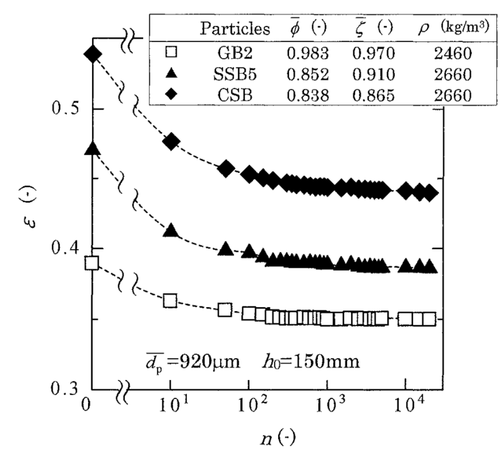

Modelling complex particles in DEM using spherical harmonics
James Young, Kevin J. Hanley
james.young@ed.ac.uk
Research funded by the UK Engineering and Physical Sciences Research Council (EPSRC) grant EP/R005877/1
Why shape matters
Height of bed vs shape [1]

Porosity of bed vs shape [1]Angle of respose vs sphericity [2]Rotating drum binary mixture distribution #1 [3]Rotating drum binary mixture distribution #2 [3]
Any smooth function defined on a unit sphere $(0\le\theta\le\pi, 0\le\phi\le 2\pi)$ $r(\theta,\phi) = \sum_{n=0}^\infty\sum_{m=-n}^{n}a_{nm}Y_n^m(\theta,\phi)$
The spherical harmonic function
$Y_n^m(\theta,\phi) = \displaystyle\sqrt{\frac{(2n+1)(n-m)!}{4\pi(n+m)!}}P_n^m(cos(\theta)e^{im\phi}) $
Approximate summations with $r(\theta,\phi) \approx \sum_{n=0}^{\color{#041e42}{N=20}}...$
$a_{nm}$ contains $(N+1)^2 = 441$ complex numbers
Dr Garboczi's Particle-shape-database [4]
Spherical Harmonics
Arbitrary particle representation from $N=0$ to $N=100.$ [5]
SH - Contact Method
Neighbour searching sphere-sphere overlap
Hierarchical contact [5]
Feng's volume-based energy-conserving contact model [6]
Numerical integration over spherical caps using Gauss-Legendre quadrature
Iteratively solving for intersection using a bisection method
Gauss-Legendre Trapezoidal Rule over sphere:
$I(f)=\int_0^{2\pi}\int_0^\pi f (\theta,\phi) \mathrm{d}\theta\mathrm{d}\phi = \int_0^{2\pi}\int_{-1}^1 \frac{f(\arccos(\zeta),\phi)}{\sin(\arccos{\zeta})} \mathrm{d} \zeta \mathrm{d}\phi$
$\quad\quad\approx \frac{\pi^2}{L+1}\sum_{j=0}^L\sum_{i=1}^m w_i \frac{f(\arccos(\zeta_i),\phi_j)}{\sin(\arccos{\zeta_i})}$
where $\phi_j=\frac{2\pi j}{L+1}$, $\zeta_i$ are the quadrature abscissae, and $w_i$ are the quadrature weights
Gauss-Legendre Trapezoidal Rule over spherical cap (centred at north pole):
$I_L(f) = \frac{\pi(1-\cos(\gamma))}{L+1}\sum_{j=0}^L\sum_{i=1}^m w_i \frac{f(\xi_i,\phi_j)}{\sin(\xi_i)}$
where $\xi_i =\arccos(\frac{1-\cos(\gamma)}{2}\zeta_i+\frac{1+\cos(\gamma)}{2})$
Can now solve vector area, force, moment, and volume integrals
Difficulty with SH representation
1. Bounding sphere from maximum radius of each particle for all $N=0,1...N_{\mathrm{max}}$2. Discretise a spherical cap using quadrature abscissae3. Intersection of quadrature point with surface, project onto neighbour surface (no contact)4. Intersection of quadrature point with surface, project onto neighbour surface (contact)5. Quadrature scheme requires intersection with quadrature point, neighbour surface defined from COM, how to find intersection?
Difficulty with SH representation: Solution
1. How to find point of intersection?2. Bisect radius, check if point inside or outside (outside)3. Bisect remaining line segment depending on previous inside/outside4. Continue until change in bisection point position < tolerance
Example: Particle-particle collision
Note: Surface point for visualisation only (i.e. not quadrature points)
Example: Particle-particle collision
Before impact, maximum impact, maximum impact cross-section, post-impact
Example: Particle-particle collision
Verification: Normalised energy vs normalised time
Practical Implementations
Coefficient storage
Quaternions
Speed: order of expansion, degree of numerical integration scheme, bisection efficiency, and iteration solving tolerance
LAMMPS package
Nearest neighbour searching (MPI)
Modified NVE time integration, new atom style, pair style, wall interaction, and math (quadrature, legendre, quaternion, contact)